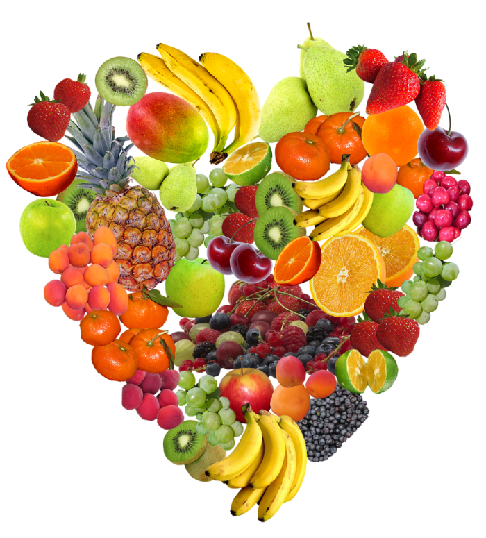
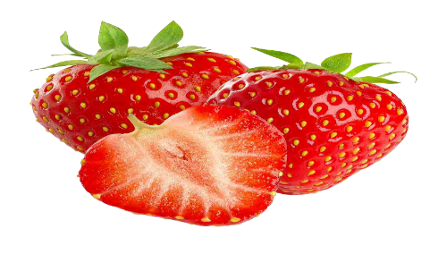
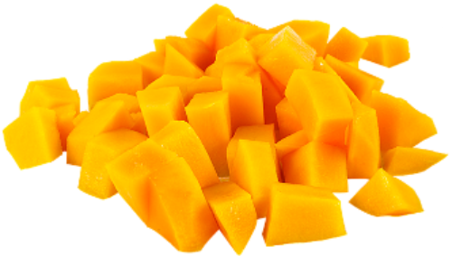
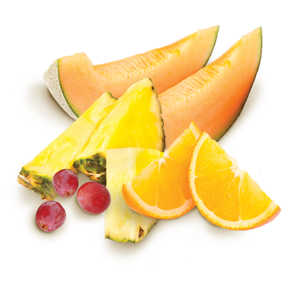

The Benefits of Fruits
Warning: Too much fruit causes: HEALTH
Any fruit or 100% fruit juice counts as part of the Fruit Group. Fruits may be fresh, canned, frozen, or dried, and may be whole, cut-up, or pureed. Eating fruit provides health benefits people who eat more fruits and vegetables as part of an overall healthy diet are likely to have a reduced risk of some chronic diseases. Fruits provide nutrients vital for health and maintenance of your body. Beside eating the fruits, we do use them to many other things such as drinking and skin care.
We all have eaten some kind of fruit at least one time. In common language usage, "fruit" normally means the fleshy seed-associated structures of a plant that are sweet or sour, and edible in the raw state, such as apples, bananas, grapes, lemons, oranges, and strawberries. On the other hand, in botanical usage, "fruit" includes many structures that are not commonly called "fruits", such as bean pods, corn kernels, tomatoes, and wheat grains.Thus,fruit is beautiful, delicious and good for you. Fruit is also interesting.
Here in this site is a brief collection of fun facts about fruit. Enjoy, and do not forget to have a fruit on your next plate!

  